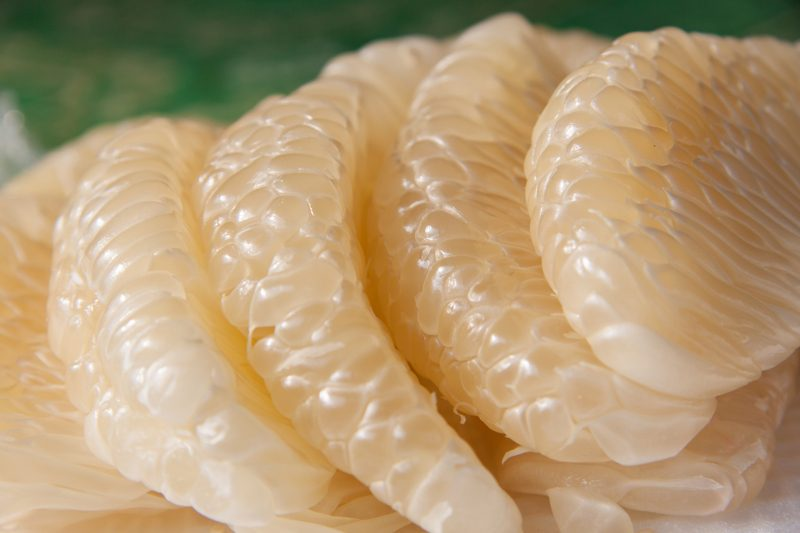

Pomelo Fruit – Grapefruit on Steroids?
I love love love love pomelos. They remind me of a sweet grapefruit on steroids. One pomelo can weigh up to two pounds. But don’t be fooled by the size. They come with some pretty darn thick skin. You may know of them as; shaddock, Bali lemon, or Chinese grapefruit. To me, I know them as a glorious, juice squirting, orb delight.
The fruit of a growing pomelo tree is the largest citrus fruit in the world, from 4-12 inches across, with a sweet/tart interior covered by a greenish-yellow or pale yellow removable peel. The skin is fairly thick and, therefore, the fruit keeps for long periods of time. Pomelo trees are native to the Far East, specifically Malaysia, Thailand and southern China and can be found growing wild on the river banks in the Fiji and Friendly Islands.
The pummelo tree itself has a compact, low canopy somewhat rounded or umbrella in shape, with evergreen foliage. The leaves are ovate, glossy and medium green, while spring flowers are showy, aromatic and white. In fact, the flowers are so fragrant the scent is used in some perfumes. The resulting fruit is borne off the tree in winter, spring or summer, depending upon the climate.
Even though they resemble a grapefruit, they can’t be eaten like one. I was never one to cut a grapefruit in half and use a spoon to remove the inner goodness. I like to work for my food, peeling, pulling, dodging sprays of citrus acid… now that’s my kind of enjoyment. It’s the small things in life… well, unless you are eating a pomelo, then it’s the big things in life.
Exterior Design
- This Southeast Asian citrus is usually pale green or yellow in color when ripe.
- Hold the fruit to see if it feels heavy; the heavier it is, the juicier.
- Look for firm, smooth peels. Thin peels mean there’s more fruit inside.
- Avoid fruit that has mushy or soft spots.
- Smell the fruit. It should have a faint, sweet fragrance at room temperature.
Interior Design
- The inside of a pomelo is exactly like a grapefruit, just larger.
- If you select a beautifully ripened one, you can have one of the juiciest, arm dripping experiences.
- Due to the large size of the fruit, one might be slightly disappointed (surprised) as to what is left when all the skin is removed.
How to Select a Pomelo
Like most thick-skinned people fruit, selecting the perfect pomelo is a gamble. The fruit varies dramatically from one to the next, ranging from yellow to pink, juicy to bone dry, seedless to seeds galore, and from sweet to tart. If you are a gambling person, then this fruit is right up your alley.
Culinary Experience
- The flesh is sweeter than its ancestor, the grapefruit, but the skin and outer membrane are equally bitter.
- Once peeled, pomelo is tasty as is or sprinkled with salt and ground chile.
- Pomelo pairs well with herbs like cilantro, mint, and basil. As well as with other tropical fruits such as pineapple, coconut, and mango. On the savory side, spring vegetables, including carrots, radishes, and onions.

How to Eat a Pomelo
You can peel them with your fingers, much like you do when eating an orange, but pomelos are a workout. Their skin is considerably thicker and it is much more difficult to dig your fingers into them.
- Start by cutting off the top “cap” of one end of the pomelo. The knife should cut about 1/2 an inch into the rind.
- Cut vertical slices down the sides of the pomelo, about 1/2 an inch into the rind.
- Pull the skin slices off the fruit.
- Dig your fingers underneath the slice at the top (where you cut the cap) and pull each one firmly away.
- Pull the bottom rind off of the fruit. You’ll be left with a much smaller fruit, covered with a white membrane.
- You can eat as is or take it one step further and remove the membrane that surrounds each segment. This is my ideal way to enjoy them. I LOVE all the pulp pockets. They are filled with love and sweet juice!
© AmieSue.com